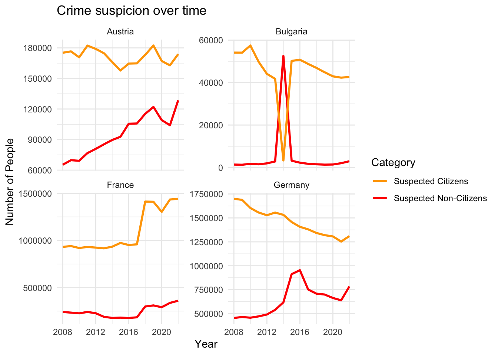
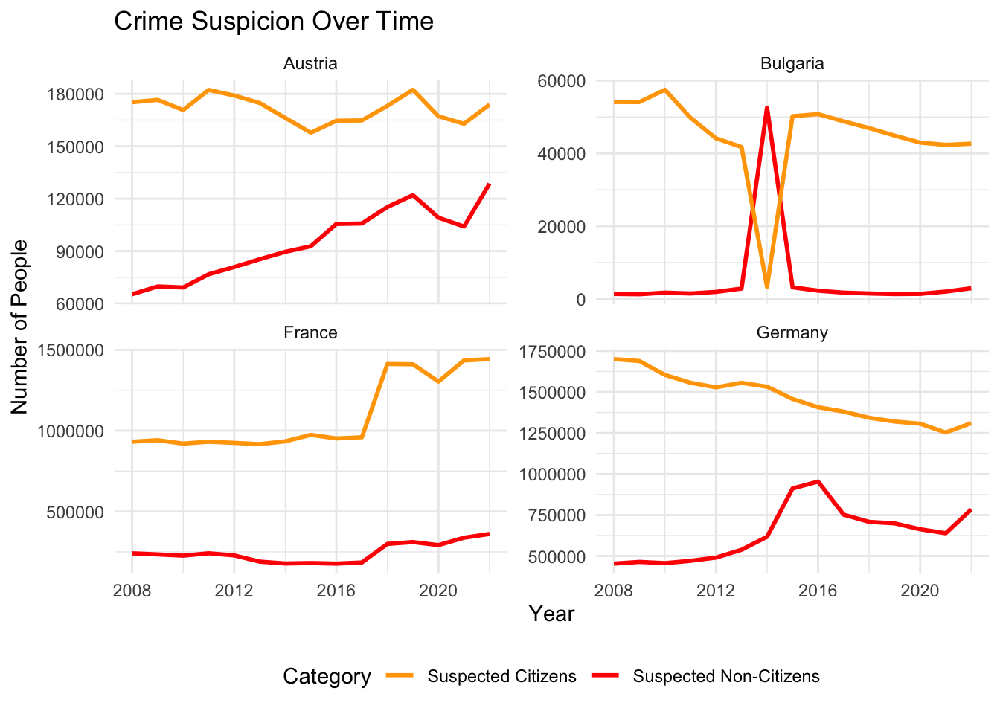

| Dataset | Rows | Columns | Years Covered | Number of Countries | Total Datapoints |
|---|---|---|---|---|---|
| Crime Dataset | 6868 | 7 | 2008 - 2022 | 41 | 48076 |
| Ideology Dataset | 6160 | 7 | 2019 - 2023 | 28 | 43120 |
| Manifesto Dataset | 5151 | 175 | 1920 - 2023 | 67 | 901425 |
Crime, Ideology, and Manifestos: A Comparative Study of European Political Trends
1 Link to GitHub
2 Links to the sources
2.1 Sources download links
2.2 Websites links from which data was extracted
3 Data description
3.1 Eurostat Crime and Criminal Justice Dataset
The Eurostat Crime and Criminal Justice dataset provides yearly statistics on the citizens and non-citizens within the justice system across European Union member states, covering the period from 2008 to 2022. It includes data on suspicion and conviction rates per 1,000 inhabitants, offering insights into both the number of individuals suspected of crimes and those convicted. By distinguishing between citizens and non-citizens, this dataset sheds light on potential disparities in how these groups are treated within the legal system. Such information is crucial for understanding systemic inequities and evaluating the impact of policies on different demographics.
3.2 Manifesto Project Dataset -
The Manifesto Project dataset offers a systematic analysis of political party manifestos across various countries, including EU member states. Spanning elections from 1946 to 2017 (with country-specific coverage), it captures the percentage of text devoted to key themes such as “law and order,” “national security,” and “national values.” This dataset is particularly valuable for studying the evolution of political discourse over time and across contexts. The dataset’s coding of text into quantifiable measures makes it a powerful tool for understanding the role of party platforms in shaping public opinion and influencing policy. Its detailed historical scope enables longitudinal studies of political ideologies and their relationship with contemporary governance trends.
3.3 EU Political Barometer Dataset -
The EU Political Barometer dataset provides bi-monthly data on public opinion and political preferences across EU member states from 2019 to 2023. It tracks ideological shifts, political attitudes, and public reactions to major societal events and political campaigns. Key indicators include changes in support for various ideologies and parties, offering a granular view of how public sentiment evolves over time. This dataset is particularly useful for analyzing short-term trends and understanding the relationship between political discourse and public opinion. By examining fluctuations in attitudes during specific events or election campaigns, we can identify patterns in voter behavior and ideological alignment. Its frequent updates make it a critical resource for real-time political analysis and policy evaluation.
4 Description table
5 Short description of the most important variables
5.1 Crime dataset
“leg_stat”: “PER_SUSP” indicates individuals who are suspected of committing crimes, “PER_CNV” indicates individuals who are convicted of crimes.
“citizen”: “NAT” indicates nationals (citizens of the reporting country), “FOR” represents foreigners (non-citizens).
5.2 Ideology dataset
“left_ideology”: numeric score (0-10) representing the left-wing ideological positioning in the country, where a higher value corresponds to stronger left ideology.
“right_ideology”: numeric score (0-10) representing the right-wing ideological positioning in the country, where a higher value corresponds to stronger right ideology.
“dalton”: named after the political scientist Russell Dalton, a numeric score (0-10) that shows the degree of ideological polarization in a country, where a higher score corresponds to higher polarization.
5.3 Manifesto dataset
“per101 to per109”: represent the percentage of the political party’s manifesto dedicated to specific themes related to national security, crime, and immigration. They focus on topics like law and order, national security, crime prevention, and the role of the state in dealing with security threats. Specifically: per101: Law and Order, per102: National Security, per103: Crime and Punishment, per104: Prison and Penal System, per105: Immigration, per106: International Relations (related to security), per107: Economic Issues, per108: Welfare and Social Issues, per109: Cultural and National Identity
“per201 to per204”: focus on economic policies, social support, and public services, potentially linking to discussions about immigration’s impact on the economy and social welfare. Specifically, per201: Economic Growth, per202: Employment, per203: Social Security, per204: Public Services
“per301 to per305”: focus on social welfare, social issues, and public goods, which might also intersect with debates around immigration and crime in relation to societal well being and state responsibility. Specifically, per301: Social Welfare, per302: Education, per303: Health Care, per304: Family Support, per305: Environment and Sustainability.
6 Cleaning of the data
6.1 Cleaning of Eurostat Data, Crime
Filtering and cleaning: remove irrelevant categories (e.g., “TOTAL” citizens and “PER_PRSC” status), keeping only the data for citizens and non-citizens related to crime suspicion and conviction.
Country name assignment: convert country codes to full country names using the “countrycode” package.
Category creation: classify data into four categories based on citizenship and legal status: “Convicted Citizens,” “Convicted Non-Citizens,” “Suspected Citizens,” and “Suspected Non-Citizens.”
Drop irrelevant variables: include only variables of interest: country, date, citizenship and legal status category, and crime rates.
Data reshaping: pivot the data to have a single row per country per year, with columns for each of the four categories (convicted and suspected citizens/non-citizens).
6.2 Cleaning of Barometer Data, ideology
Filter invalid data: removes data related to “ewma” (exponentially weighted moving average) and retain only real ideological scores.
Date filtering: filter the dataset to include only data up until 2023.
6.3 Joint Cleaning
- Data intersection: ensure that only countries present in both the Crime, Manifesto, and Ideology datasets remain in each dataset. This is achieved through a semi_join to keep only the common countries.
6.4 Cleaning of Manifesto Data, manifesto
Date filtering: remove data before 2008 (the first available year in the Crime dataset).
Column selection: Keeps only relevant columns in the manifesto dataset (e.g., political themes related to law and order, national security, immigration).
6.5 Group by date and country
- Manifesto Data: extract the year from the date and group the data by country and year to compute the average percentage of the manifesto dedicated to specific themes like law and order, national security, and immigration.
_ Ideology Data: extract the year from the date and groups the data by country and year to calculate the average ideological scores (left, right, and Dalton’s polarization index).
6.6 Merge datasets
- Renaming and merging: Rename columns in the Crime, Manifesto, and Ideology datasets for consistency and merge them into one unified dataset. “full_join” is used to ensure no data is lost while combining them based on country and year.
7 A description of the research question
7.1 Research question: What is the association between immigration and crime suspicions and convictions in the EU, considering political ideology?
The research explores the relationship between immigration status and crime outcomes (suspicion and conviction rates) in EU countries. It questions whether claims by political entities, particularly right-wing parties, that immigration drives up crime rates hold true, and explores how other intervening factors, such as the demographic profile of immigrants, might contribute to this perception.
Background context and relevance Right-wing political narratives often link immigration with rising crime rates without acknowledging broader contextual factors. For example, statistical evidence suggests that most crimes are committed by young males—a group overrepresented among immigrant populations. Across the EU, a significant proportion of non-citizens are young males: non-national men aged 20–49 constitute 29% of their demographic group, compared to 18% for nationals. Additionally, 54–60% of unauthorized immigrants are male, with a majority under 35 years old. Such demographic realities could skew perceptions of immigrant involvement in crime when not carefully controlled for. *Source: Migration 2023
This research aims to integrate crime statistics and demographic data with measures of political ideology to disentangle these associations. By doing so, it challenges simplistic narratives and aims to explore whether shifts in political rhetoric influence crime outcomes or merely exacerbate perceptions of immigrant criminality.
7.2 Data and methodology
Crime Data: Eurostat provides comprehensive data on annual suspicion and conviction rates per 1,000 residents, dis-aggregated by citizenship (non-citizens vs. citizens) for 2008–2022. This allows for trend analysis of disparities between groups.
Political ideology data:
- Manifesto Project Database: Tracks the content of political party platforms during election years, focusing on themes such as “law and order” and “security.”
- EU Political Barometer: Captures public opinion on political ideologies monthly from 2019–2023.
- Manifesto Project Database: Tracks the content of political party platforms during election years, focusing on themes such as “law and order” and “security.”
A Difference-in-Differences (DiD) approach will compare changes in crime-related outcomes before and after election periods with shifts in ideological rhetoric. Non-election years serve as a control group, isolating the causal effect of political discourse.
7.3 Core issues addressed
The research will investigate: 1. Whether increased suspicion of immigrant crime correlates with heightened right-wing rhetoric. 2. If young male over representation among immigrants, rather than immigrant status itself, explains these crime rates.
3. Do conviction rates—representing judicial outcomes—reflect ideological trends, or are they more stable and less subject to political influence?
7.4 Significance and expected outcomes
This study seeks to clarify how political discourse shapes public perceptions and crime outcomes involving immigrants. Preliminary hypotheses suggest that while suspicion rates rise in line with ideological shifts, conviction rates remain relatively stable, suggesting biases in suspicion rather than evidence-based outcomes. By emphasizing intervening factors like demographics, the research highlights the importance of nuanced policymaking and avoids perpetuating harmful stereotypes.
8 Target variable
8.1 Crime suspicion rates over time for citizens and non-citizens (immigrants) for selected countries
Warning: Using `size` aesthetic for lines was deprecated in ggplot2 3.4.0.
ℹ Please use `linewidth` instead.
8.2 Crime conviction rates over time for citizens and non-citizens (immigrants) for selected countries
